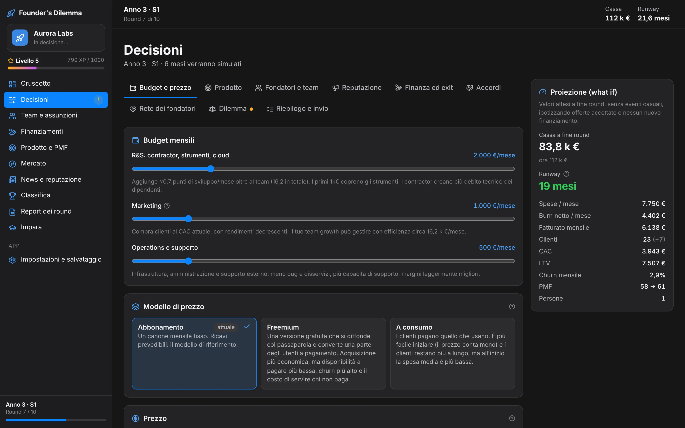
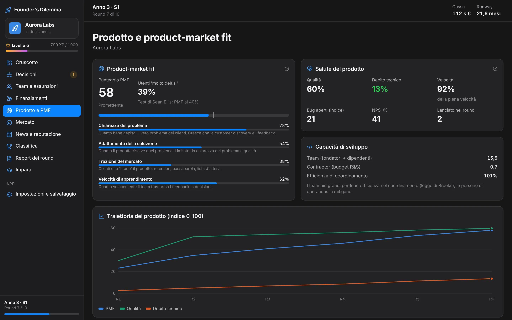
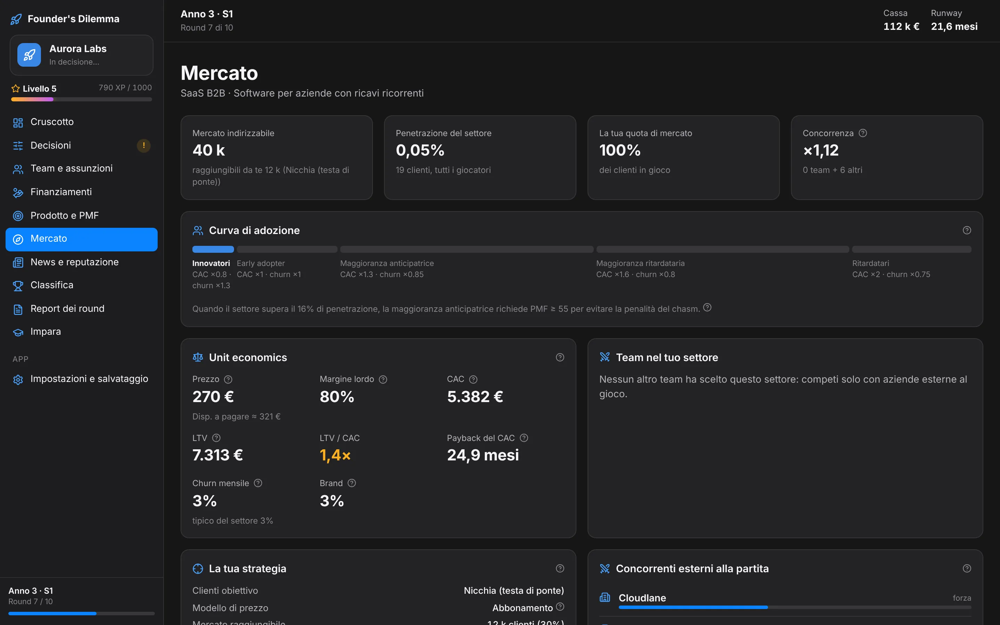
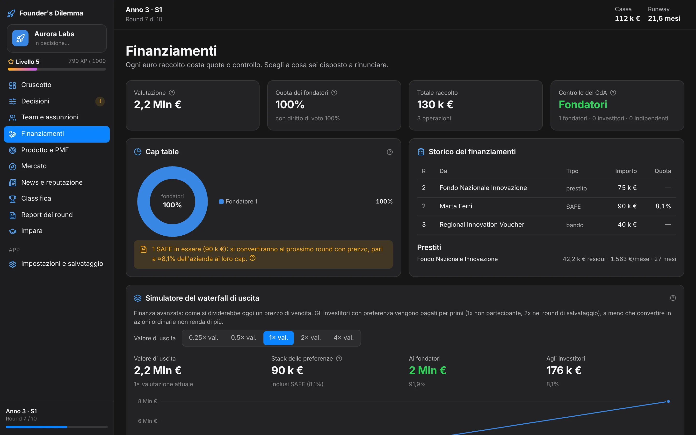
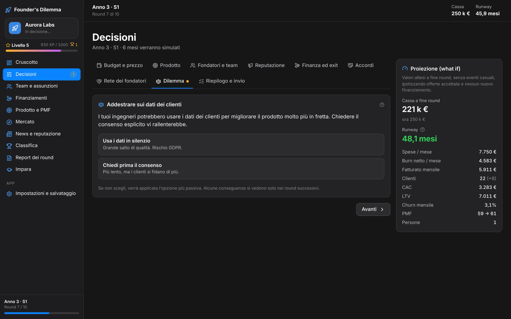
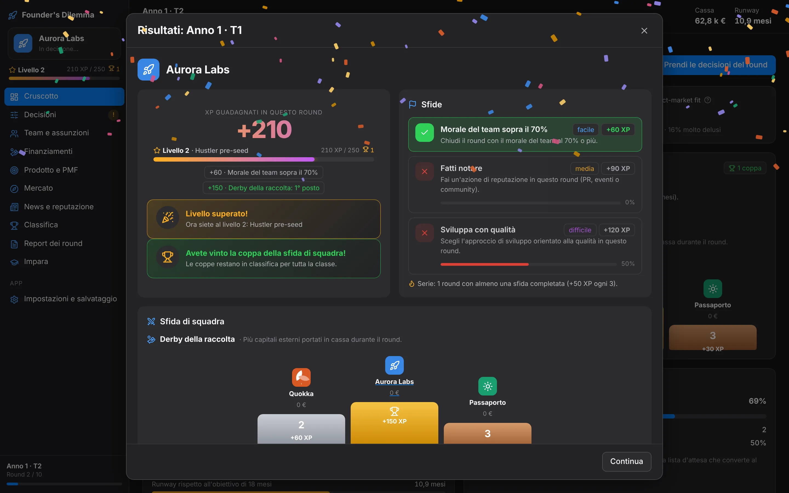
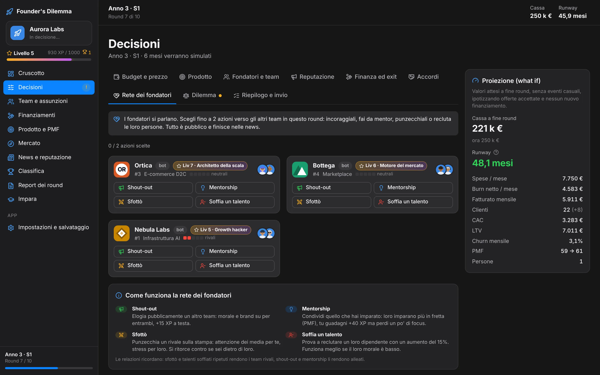
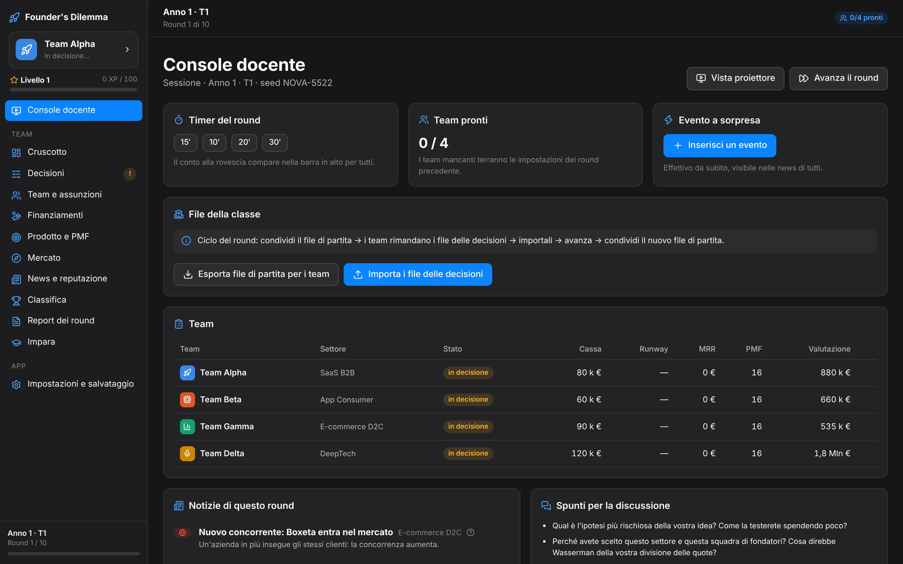
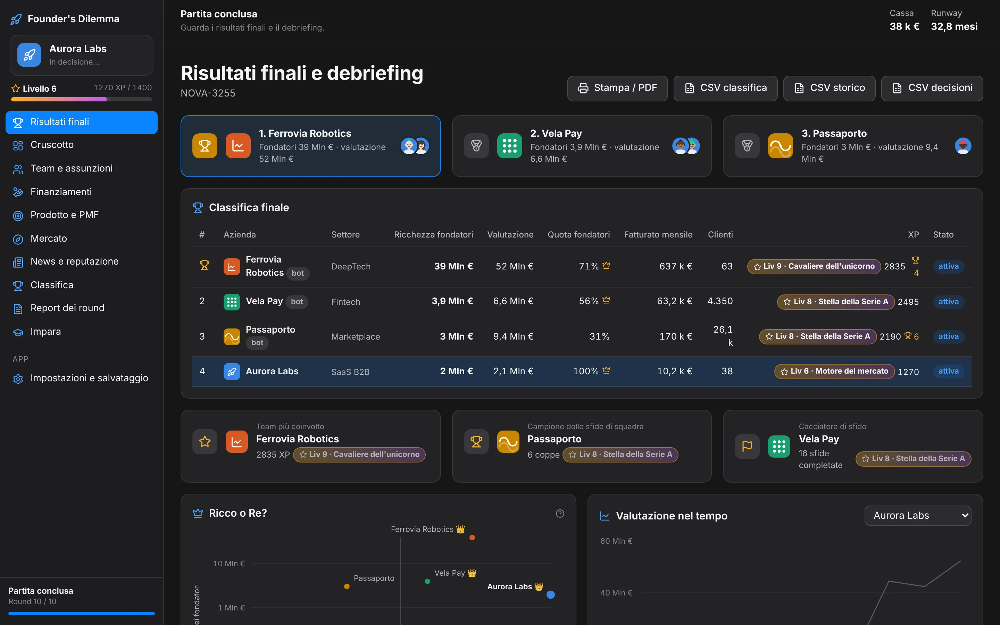

Recap animato a fine round
Tre sfide per round (facile, media, difficile), serie di round consecutivi premiate e livelli da Sognatore da garage a Leggenda delle startup.
Il gioco rende sperimentabile quello che a lezione resta astratto. Ogni sistema rimanda a una scheda della sezione Impara dell'app, con formule e riferimenti bibliografici.
MVP, interviste ai clienti, smoke test, pivot. La discovery costa tempo di sviluppo ma accelera l'apprendimento.
Un punteggio PMF che cresce con chiarezza del problema, qualità e trazione. Il test di Sean Ellis: il 40% di utenti "molto delusi" senza il prodotto.
Segmenti di Rogers, chasm alla maggioranza anticipatrice, testa di ponte: nicchia, mercato ampio o clienti premium.
CAC, LTV, churn, payback, margine lordo, elasticità. Abbonamento, freemium o a consumo, con la disponibilità a pagare stimata.
Bandi, prestiti, crowdfunding, SAFE, round prezzati, option pool, waterfall. Investitori con posti e capitale limitati, contesi tra i team.
Archetipi dei fondatori, divisione delle quote, vesting e cliff, aste per i talenti contro gli altri team.
Sedici dilemmi senza risposta giusta, il controllo del consiglio di amministrazione e la classifica finale Ricco o Re.
Concorrenti esterni che reagiscono alle tue mosse, partnership e acquisizioni tra i team della classe.
Dark pattern, dati dei clienti, promesse agli investitori. Eventi di mercato, reputazione e scelte con conseguenze che arrivano dopo.
Ogni round simula tre o sei mesi di vita dell'azienda. Il ciclo decidere, osservare, discutere e rivedere la strategia segue il modello dell'apprendimento esperienziale.
Budget tra R&S, marketing e operations. Prezzo e modello. Canale go-to-market, approccio allo sviluppo, assunzioni, pitch agli investitori e il dilemma del round.
Clienti, ricavi, cassa, PMF, diluizione e valutazione. Il motore è deterministico: con lo stesso seed la partita si ripete identica e si confronta tra classi.
Report del round, commento del mentor, news di mercato e classifica. XP, sfide e coppe tengono alta l'attenzione tra un round e l'altro.
Il debriefing collega i numeri alla teoria. La console del docente propone gli spunti di discussione, le esportazioni CSV servono per la valutazione.

Fallire, diluirsi troppo o perdere il controllo del consiglio in una simulazione costa un voto parziale, non i risparmi di una vita.
Chiarezza del problema, adattamento della soluzione, trazione del mercato e velocità di apprendimento compongono il punteggio PMF. Cresce con la customer discovery e i feedback dei clienti, non con il marketing.

Innovatori, early adopter, maggioranza anticipatrice e ritardataria. Quando il settore supera il 16% di penetrazione serve un PMF sufficiente per superare il chasm. CAC, LTV, churn e payback si aggiornano ogni round.

Bandi, prestiti, crowdfunding, SAFE e round prezzati con investitori che valutano i numeri dell'ultimo round. La cap table mostra la diluizione, il consiglio di amministrazione può cambiare mano.

Un conflitto tra co-fondatori, il consiglio che vuole un CEO professionista, un growth hack con i dark pattern, i dati dei clienti per addestrare il prodotto, il taglio del team. Ogni scelta ha effetti su morale, reputazione e controllo, spesso nei round successivi.

XP, livelli, sfide e coppe tengono alta l'attenzione tra un round e l'altro. Gli XP non cambiano mai chi vince: la classifica resta sulla ricchezza dei fondatori.

Tre sfide per round (facile, media, difficile), serie di round consecutivi premiate e livelli da Sognatore da garage a Leggenda delle startup.

Fino a due azioni per round verso gli altri team: shout-out, mentorship, sfottò e tentativi di soffiare talenti. Le relazioni ricordano e tutto finisce nelle news.
Da 12 a 60 studenti in 4-8 team. I bot completano il mercato se i team sono pochi. I dati restano sui computer della classe.
Un team contro concorrenti AI con tre stili: lean, steady, blitz. Per lo studio individuale, i compiti a casa e la partita di prova prima del corso.
Un solo computer o il proiettore. I team si alternano, una schermata di privacy nasconde i dati finché il team non li apre, il docente avanza i round da una console protetta da PIN.
Ogni team sul proprio portatile. Il docente condivide il file di partita, ogni team rimanda un piccolo file di decisioni, il docente li importa e avanza il round.

A fine partita il debriefing mette tutto sullo stesso grafico: a destra della linea i fondatori mantengono la maggioranza dei voti, più in alto le loro quote valgono di più. Pochi team riescono in entrambe le cose. È il dilemma del fondatore di Wasserman, misurato.

Sei documenti pronti: formato consigliato di 6 incontri da 3 ore, circa 3 ECTS con lo studio individuale, obiettivi formativi secondo i descrittori di Dublino, rubriche di valutazione e il modello di simulazione documentato.
Obiettivi formativi, CFU, struttura, valutazione, requisiti e costi. Anche in inglese.
Sei incontri con teoria, round di gioco e domande di debriefing. Varianti da 1 giorno e da 2 settimane.
Preparazione, conduzione in aula, ciclo dei file e problemi frequenti.
Regole, decisioni, consigli e il primo round passo per passo.
Pesi, rubriche, modelli di decision memo e di report finale.
Formule, parametri e collegamento con la teoria. Per docenti e revisori.
Online su GitHub Pages oppure come un unico file HTML che si apre con un doppio clic, anche offline. Comodo da caricare su Moodle.
App nativa universale per Apple silicon e Intel, da macOS 11 in poi.
Installer per Windows 10 e 11, AppImage e .deb per Linux. Disponibili nelle Releases del repository.
I salvataggi restano sul computer e si esportano come file. Nessun dato personale raccolto, nessun server da gestire.
Codice aperto con licenza PolyForm Noncommercial 1.0.0, materiali del corso con licenza Creative Commons BY-NC-SA 4.0. Si può usare, studiare e adattare per scopi non commerciali; per usi commerciali va contattato l'autore.
Un tour guidato spiega ogni schermata al primo avvio. Se poi vuoi portarlo in aula, i materiali sono già pronti.
kurisuchanxxx.github.io/foundersdilemma/play